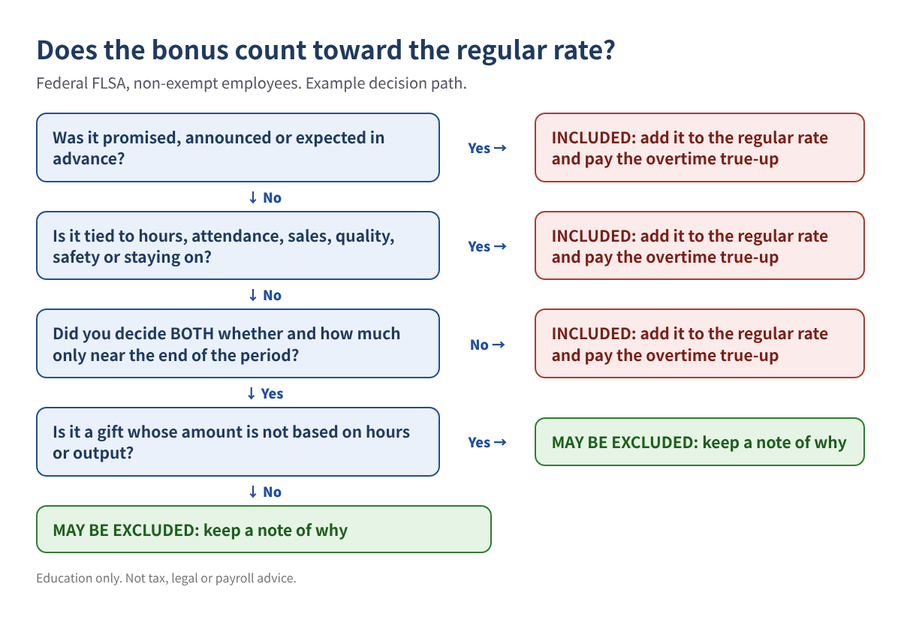
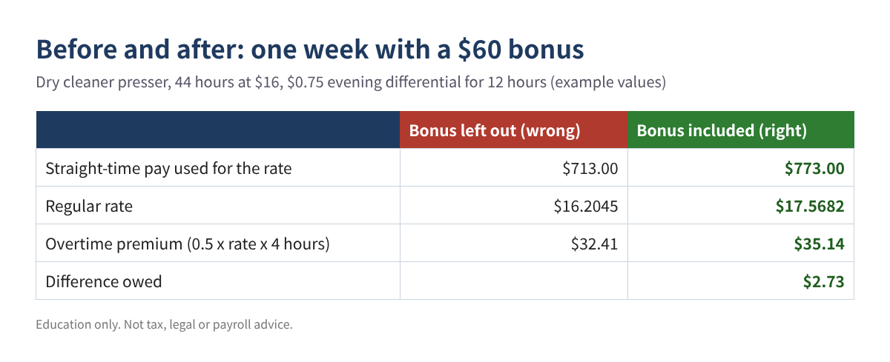
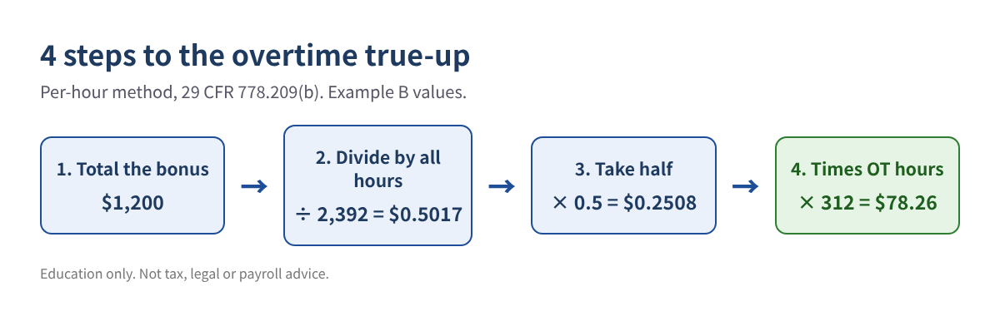
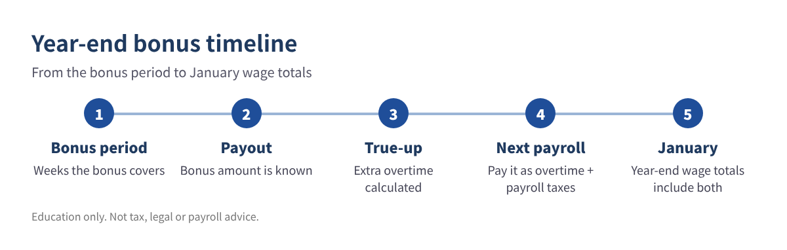

Paying Year-End Bonuses to Hourly Staff? How to Calculate the Extra Overtime You May Owe
↓ Get the free Excel + PDF kit for this article
December is bonus season. Many restaurants, salons, cleaners and shops thank hourly staff with a year-end, attendance or production bonus. What many owners do not know is that, under the federal Fair Labor Standards Act (FLSA), most of these bonuses change the overtime rate. If an employee worked overtime during the period the bonus covers, the overtime you already paid was a little too low, and you owe a small extra amount, often called an overtime true-up.
The amounts are usually small, but they add up across staff and years, and they are easy to calculate once you know the method. This guide walks you through it with worked examples and formulas you can type into Excel or Google Sheets yourself.
Who this applies to
- Employees who are non-exempt (eligible for overtime), usually hourly staff.
- Bonuses paid for work during a period in which the employee had overtime (hours over 40 in a workweek).
- Federal FLSA rules. Some states have stricter overtime rules, so also check your state labor office.
It does not apply to exempt salaried managers, and it does not matter for employees who never worked more than 40 hours in a week during the bonus period.
Step 1: Decide whether the bonus counts
The FLSA uses the regular rate: all pay for the work, divided by the hours worked. Overtime is 1.5 times this regular rate. According to the US Department of Labor (Fact Sheet #56C), bonuses that are announced or expected, such as attendance, production, quality and safety bonuses, are nondiscretionary and must be included. A bonus is discretionary, and can be left out, only if all three are true:
- You decide whether to pay it only at or near the end of the period.
- You decide how much only at or near the end of the period.
- It is not paid under any promise, agreement or practice that makes staff expect it.
The label does not decide it. A "holiday bonus" that staff were told about in October, or that they get every year, is generally not discretionary. A gift whose amount is not based on hours, production or efficiency, such as the same gift card for everyone, may be excluded.

| Bonus type (examples) | Usually |
|---|---|
| Attendance bonus for no missed shifts | Included |
| Production or sales bonus by a set formula | Included |
| Stay bonus paid if still employed on a date | Included |
| Year-end bonus promised in a policy or paid every year | Included |
| Same-amount holiday gift not tied to work | May be excluded |
| Surprise spot bonus that was never announced | May be excluded |
Table 1. Common bonus types. Examples only; your facts decide.
Step 2: A bonus for one week
If the bonus is for a single workweek, add it to that week's straight-time pay, divide by all hours worked to get the regular rate, then pay an extra half of that rate for each overtime hour. The Department of Labor's own example: $10 an hour for 43 hours is $430; add a $50 bonus for $480. The regular rate is $480 ÷ 43 = $11.16. Half of that, $5.58, times 3 overtime hours is $16.74, so the week's total is $496.74.
Here is a second example with a shift differential (example values). A dry cleaner presser works 44 hours at $16, with a $0.75 evening differential for 12 of those hours, and earns a $60 production bonus. Straight-time pay is 44 × $16 + 12 × $0.75 + $60 = $773. The regular rate is $773 ÷ 44 = $17.5682. The overtime premium is 0.5 × $17.5682 × 4 = $35.14. Leaving the bonus out would give only $32.41, so the employee would be $2.73 short.

Formula for one week (type your own cell names):
=ROUND(0.5*(Wage*Hours+Differential*DiffHours+Bonus)/Hours*MAX(0,Hours-40),2)
Step 3: A bonus that covers many weeks
Year-end and quarterly bonuses cover many weeks. The regulation at 29 CFR 778.209 lets you pay normal overtime first and wait until the bonus amount is known. Then you spread the bonus back over the weeks it was earned and pay the extra half-time for each overtime hour. If you cannot tie the bonus to particular weeks, the rule allows you to assume an equal amount of bonus for each hour worked (or for each week). The per-hour method is the simplest:
Extra overtime = 0.5 × (Bonus ÷ total hours in the period) × overtime hours in the period

Example B (example values): a nail salon policy promises a $1,200 year-end bonus. A tech worked 46 hours a week for 52 weeks: 2,392 hours, including 312 overtime hours.
| Cell | What to type | Example result |
|---|---|---|
| B1 | Bonus: 1200 | $1,200.00 |
| B2 | Total hours in the period: 2392 | 2,392 |
| B3 | Overtime hours in the period: 312 | 312 |
| B4 | =ROUND(0.5*B1/B2*B3,2) | $78.26 |
| B5 | =ROUND(B4*1.0765,2) | $84.25 |
Table 2. Excel or Google Sheets layout for Example B. B5 adds the employer's 6.2% Social Security and 1.45% Medicare.
If five techs have the same pattern, the total is about $421. Example A (example values): a restaurant cook earned a $390 quarterly attendance bonus over 13 weeks with 546 hours, 32 of them overtime. Per-hour method: $390 ÷ 546 = $0.7143; × 0.5 × 32 = $11.43. The per-week method (the same $30 each week, divided by that week's hours) gives $10.58. Pick one reasonable method and use it consistently.
Step 4: Pay it and keep the record

Once the amount is known, add the true-up as overtime pay, for example on the next payroll. Treat it like other wages for withholding and payroll taxes, and make sure your year-end wage totals include both the bonus and the true-up. Save your worksheet with your payroll records.
Edge cases
- No overtime in the bonus period: the true-up is $0.
- Employee left before the payout: if they still receive the bonus, include their overtime weeks.
- Part-year employee: use only the weeks they worked.
- Two hourly rates in one week: add all straight-time pay and divide by all hours.
- Bonus tied to specific weeks (for example a December sales bonus): use those weeks only.
Common mistakes
- Calling a promised bonus "discretionary" and leaving it out.
- Paying overtime at 1.5 × the hourly wage only, ignoring the bonus.
- Dividing the bonus by 2,080 hours instead of the hours actually worked.
- Treating daily hours over 8 as federal overtime (the federal rule is hours over 40 in a workweek; your state may add daily rules).
- Forgetting employees who already left but still got the bonus.
- Keeping no record of how the true-up was calculated.
FAQ
Do I have to recalculate overtime for a Christmas bonus?
If staff were told about it in advance, expect it every year, or it depends on hours or performance, it is generally included. A true gift of the same amount, not tied to work, may be excluded.
When do I have to pay the extra overtime?
The rule allows you to wait until the bonus amount can be determined, then apportion it back. Paying it with the bonus or on the next payroll keeps things simple.
Which method should I use for a yearly bonus?
If the bonus cannot be tied to specific weeks, equal-per-hour and equal-per-week are both described in 29 CFR 778.209(b). The per-hour method needs only three numbers.
Does this apply to my salaried manager?
Not if the manager is properly exempt from overtime. It applies to non-exempt employees, including some salaried staff who are paid overtime.
Checklist
- List every 2026 bonus paid to hourly (non-exempt) staff.
- Check each one with the three-part discretionary test.
- Write down the period each bonus covers.
- Pull weekly hours and add up hours over 40 each week.
- Calculate the true-up and pay it as overtime.
- Withhold payroll taxes and keep the worksheet.
- Check your state labor office for stricter rules.
Disclaimer: This article is educational and is not tax, legal or payroll advice. It covers federal FLSA rules for non-exempt employees; state and local laws may require more. All figures are example values. Confirm your situation with the US Department of Labor or your state labor office.
You can download the ready-made Bonus Overtime Calculator 2026 for free in the Free kit download box below (Excel + PDF guide, no sign-up).
Sources
- US Department of Labor, Fact Sheet #56C: Bonuses under the Fair Labor Standards Act
- 29 CFR 778.209, Method of inclusion of bonus in regular rate
- 29 CFR 778.211, Discretionary bonuses
Free kit download
Tools to follow this article step by step. No sign-up needed.
- Excel workbook (.xlsx)Bonus_Overtime_Calculator_2026_EN.xlsx · 19 KB
- Step-by-step guide (PDF)Bonus_Overtime_Guide_2026_EN.pdf · 92 KB
Free to use for yourself and your own business; please do not resell or redistribute. General information, not tax, legal or accounting advice; check every figure against your own records.